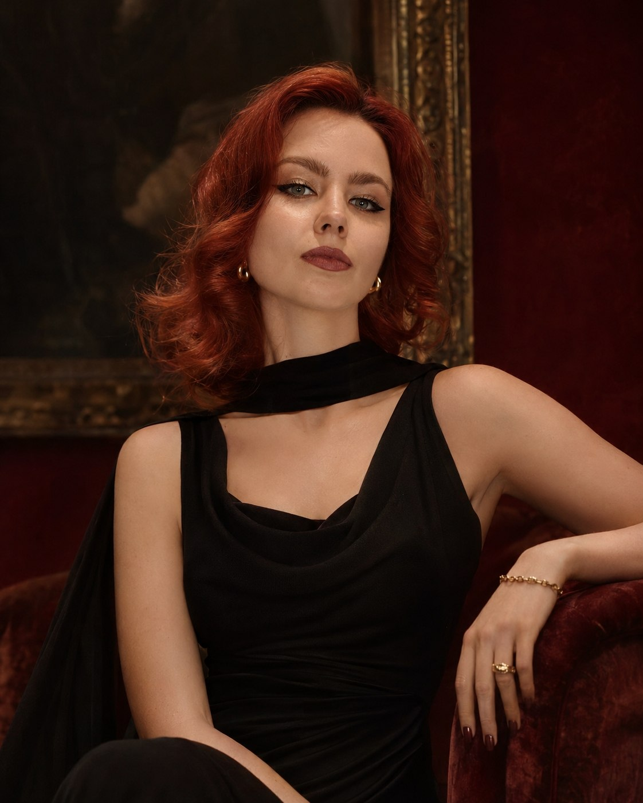
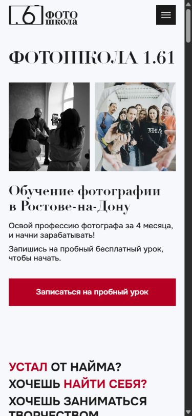

01Дизайн и ИИ

Вебпрактик.Маркетинг
Skills · Claude Code · CodexПравила бренда, MVP и детальная работа над сайтом с ИИ.
Привет
Я Анастасия
UX/UI-дизайнер
В дизайне с 2021 года
Наведите курсор или коснитесь выделенного слова, чтобы увидеть пример из проекта.
Проектирую личные кабинеты, аналитические интерфейсы, сайты и цифровые сервисы. Соединяю пользовательский опыт, визуальный дизайн и технологии, чтобы создавать решения для людей и бизнеса.

Правила бренда, MVP и детальная работа над сайтом с ИИ.

Развитие отдельных сценариев корпоративных закупок в существующей платформе.

Визуальное оформление аналитики для образовательных организаций.


Сайт с нуля на Tilda и SEO. Путь от знакомства со школой до заявки на пробный урок.
В интерфейсных проектах — кабинеты, роли и аналитика.
В вебе — собственный дизайн, адаптивы, анимации и реализация.
В работе с ИИ — правила проекта и последовательная доработка.
С начала работы в агентстве самостоятельно вела проекты и защищала решения перед клиентами. Мне интересно соединять интерфейсную задачу с визуальным решением и доводить проект до реализации.
Познакомиться в TelegramВ «Вебпрактике» работала над интерфейсами для бизнеса и образовательных организаций. Самостоятельно прорабатывала дизайн-решения и аргументировала их на презентациях клиентам.
Для «АШАН Бизнес» проработала сценарии корзины и оформления заказа, включая отображение скидок по программе лояльности. В команде аналитического кабинета для образовательных организаций оформляла дашборды, метрики и таблицы по согласованной логике представления данных.
Выросла с Junior до Middle. Получила грейд в июне 2026 года после экзаменов по системе Skills Team перед руководством агентства.
Создавала и реализовывала спецпроекты — сайты мероприятий и образовательных программ: дизайн, сборка на Тильде и адаптация под устройства. Также работала над презентациями, развивала фирменный стиль мерча и адаптировала рекламные макеты.
Создала с нуля под ключ три сайта на Тильде для фотошколы 1.61, RentRostov и BearOx. Самостоятельно вела каждый проект от сбора информации до публикации.
Расскажу о своём опыте и покажу проекты, близкие вашим задачам.